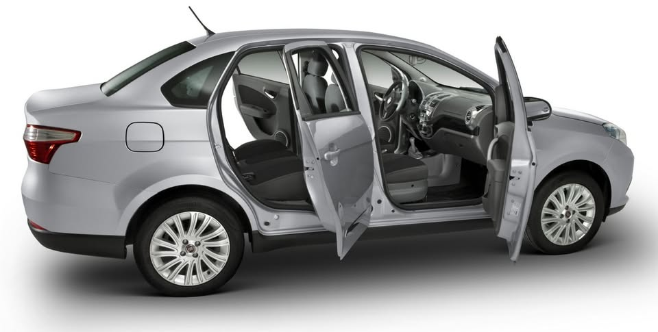

01
Conserto
Conserto do conjunto de pinos de porta e porta-malas.
Conserto, regulagem e substituição de pinos de porta e porta-malas. Para automóveis novos, semi novos e antigos.
Pinos · Dobradiças · Regulagem · Porta-malas
Role para o serviço01 O ponto de partida
Com o uso, o conjunto de pinos e dobradiças pode perder o ajuste. O resultado aparece no dia a dia: a porta raspa, ganha folga ou deixa de fechar com a mesma precisão.
O fechar deixa de ser uniforme e o encaixe pede atenção.
O movimento da porta perde firmeza ao abrir e fechar.
O encaixe exige mais força ou deixa de ser regular.

Fig. 02 / Portas abertas02 O serviço
Um serviço específico para o conjunto que faz a porta abrir, fechar e alinhar. Sem generalidades: o foco está no encaixe.
Conserto do conjunto de pinos de porta e porta-malas.
Regulagem de portas e porta-malas para o encaixe correto.
Substituição de pinos de porta e porta-malas.
Automóveis novos, semi novos e antigos.
Falar sobre o meu carro03 A oficina
A Trussardi Auto Portas trabalha com conserto, regulagem e substituição de pinos de porta e porta-malas. O atendimento é com hora marcada, na Av. Santos Dumont, 1024.
Av. Santos Dumont
Floresta · Porto Alegre · RS
90230-240
04 Antes de agendar
Sim. A Trussardi atende automóveis novos, semi novos e antigos.
Quando o conjunto perde o ajuste, a porta pode raspar, apresentar folga ou ruído. A avaliação presencial indica se é o caso de regulagem ou substituição.
Chame no WhatsApp (51) 99204-0001. O atendimento é com hora marcada, de segunda a sexta, das 8h30 às 17h30.
Av. Santos Dumont, 1024 — Floresta, Porto Alegre/RS, 90230-240. Abrir no Google Maps.
Atendimento com hora marcada.
Segunda a sexta · 8h30–17h30